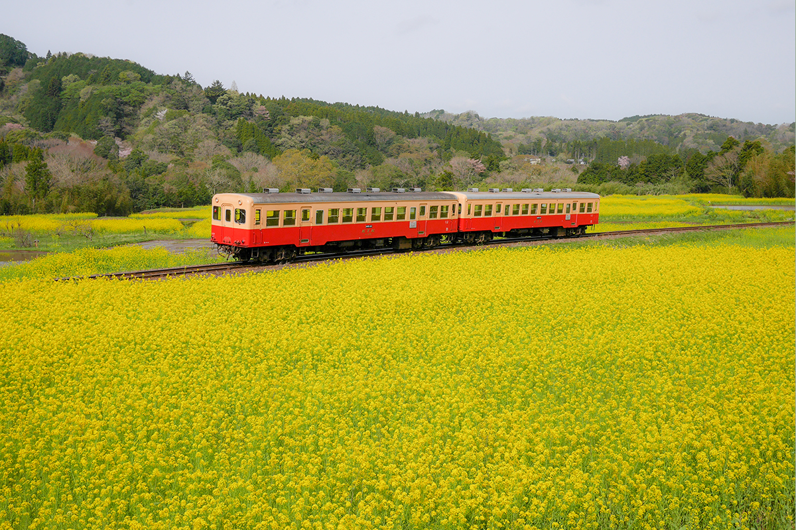
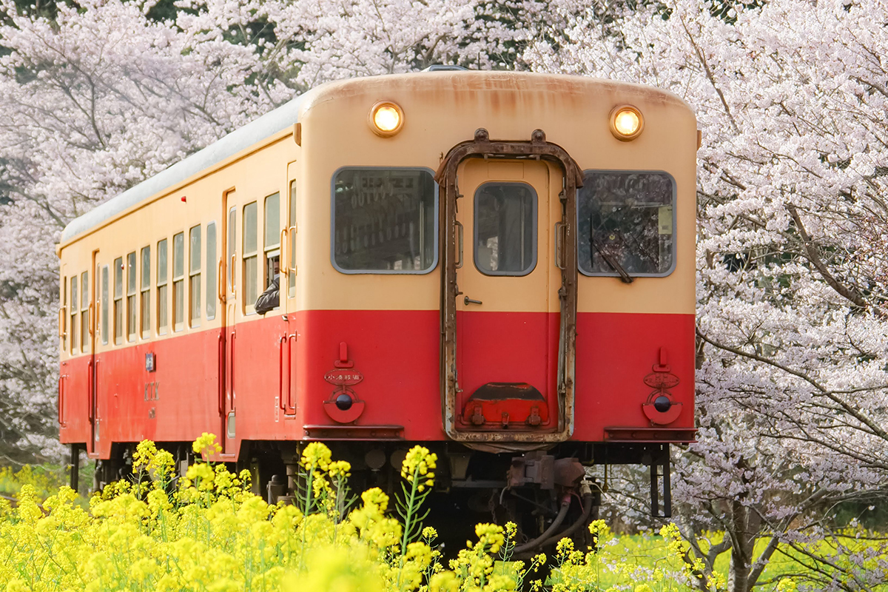

Префектура Тиба · Итихара · железная дорога
Железная дорога Коминато: маленький дизельный поезд среди рапсовых полей Босо

Над путями железной дороги Коминато нет проводов: по линии ходят дизельные вагоны, и ничто не загораживает холмы и поля полуострова Босо. Весной поезд идёт прямо через жёлтый рапс.
Линия
Сельская Япония рядом со столицей
Железная дорога Коминато соединяет станцию Гои в городе Итихара с Кадзуса-Накано в глубине полуострова Босо. Длина линии 39,1 км, ширина колеи 1067 мм. По ней ходят небольшие дизельные вагоны, поэтому над путями нет контактной сети и вид из окна открытый: холмы, рощи, рисовые поля и деревни. Трудно поверить, что это всё ещё столичный регион.
Главные станции по пути от Гои: Кадзуса-Усику, Такатаки, Цукисаки, Ёро-Кэйкоку и конечная Кадзуса-Накано.

Сезон
Когда цветёт рапс
Линия красива в любое время года, но особенно она популярна весной, когда вдоль путей цветёт рапс. Актриса, которая в 2025 году выбирала десять местных линий Японии для поездок, назвала Коминато своей мечтой: увидеть поезд среди рапсовых полей и самой проехать на нём. Время цветения меняется из года в год, поэтому перед поездкой его стоит уточнить.
После тайфуна 21 сентября 2026 года поезда ходят только между Гои и Кадзуса-Усику. Дальше в сторону Ёро-Кэйкоку идут замещающие автобусы, рейсов у них намного меньше, чем у поездов. В октябре 2026 года компания оценивала, что на восстановление всей линии уйдёт от полугода до года и больше.
Железная дорога Коминато
- Адрес
- префектура Тиба, Итихара, станция Гои
- Как добраться
- от Токио до станции Гои около 60 минут на скором поезде JR по линии Собу (по данным официального сайта на 2026 год)
- Сайт
- kominato.co.jp
Фото: Железная дорога Коминато.